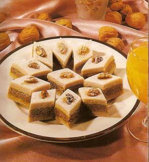

Losanges aux noix

Ingédients:
Première PÂTE
- 200 gr de poudre d'amandes
- 250 gr de sucre glace tamisé
- 1 à 2 blanc d'oeufs
- Colorant rose dilué dans de l'arôme fraise
- Colorant vert dilué dans de l'arôme pistache
POUR LA DEUXIÈME PÂTE:
- 400 gr de biscuits (casse croûte moulus)
- 200 gr de noix grossièrement moulues (150 gr environ)
- 4 C. à soupe de miel
- 5 C. à soupe d'eau de fleurs d'oranger
- 8 C. à soupe de beurre fondu
- 1 C. à café de vanille
PRÉPARATION DE LA PÂTE N°1:
Dans une terrine, bien mélanger les amandes et le sucre glace tamisé.
Humecter avec le blanc d'oeuf pour obtenir une pâte lisse et facile à travailler.
La partager en 2 boules égales.
Colorer une boule en vertn et l'autre boule en rose.
Partager ensuite les 2 boules colorées en 2 parties égales.
Laisser reposer sur un plat saupoudré de sucre glace pour qu'elles ne collent pas.
PRÉPARATION DE LA PÂTE N°2:
Dans une soupière, mélanger les biscuits moulus, la noix moulue, la vanille, le beurre fondu
et l'eau de fleurs d'oranger.
Humecter avec du miel et travailler avec les mains pour obtenir une pâte homogène.
Sur un plat saupoudré de sucre glace, étaler la première pâte rose.
Ensuite la pâte verte, puisla pâte N°2.
Saupoudrer toute la surface de sucre glace, puis couper des losanges à l'aide d'un couteau.
Décorez ensuite chaque losange avec une demi-noix.
Retour à Liste des recettes